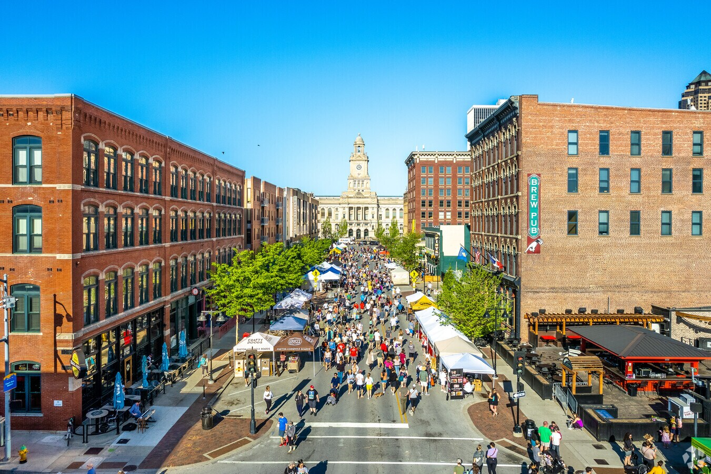

Des Moines, the capital of Iowa, is a vibrant city known for its beautiful art scene, culture, and great economy. Des Moines is the state's largest city and serves as a hub for finance and government. Visitors and residents enjoy its lively downtown Farmers' Market, beautiful parks, and numerous festivals that are celebrated yearly
Capital City of Iowa
Des Moines
